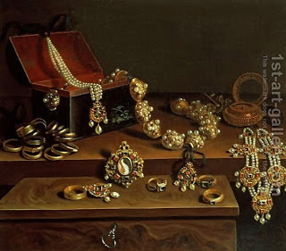

Bava Kamma 12 - Are Slaves Like Land?
Movable properties can be acquired by dint of land acquisition, and no additional act of acquisition (such as lifting) is then required, based on "... And their father gave them many gifts of gold and silver, and delicacies, together with the fortified cities in Judah ." Since the slaves are inherited like land, based on "... you shall bequeath them as permanent property ..." can one acquire movables together with the slaves? - No, because they move, unlike cities in Judah.
One is not liable for damages to properties belonging to the Temple, based on "... the ox of his fellow ..."